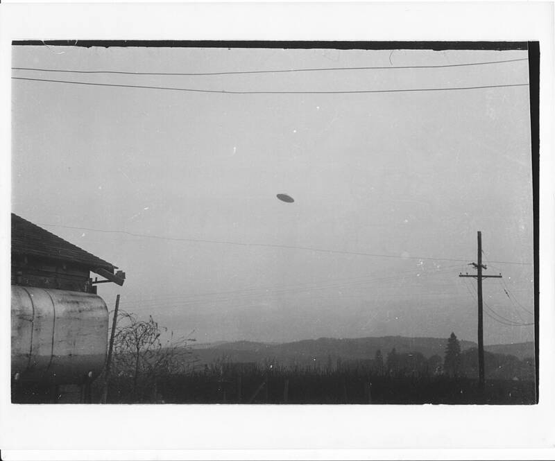

McMinnville UFO photos
Near Sheridan, Oregon, 1950

On May 11, 1950, farmer Paul Trent took two photos of a disc-shaped object his wife Evelyn said she saw approaching their farm. Reprinted in Life magazine, they are among the most famous UFO photographs ever taken. Condon Committee investigator William K. Hartmann and ufologist Bruce Maccabee argued the images may rule out a small model, while skeptics Philip J. Klass and Robert Sheaffer called them a hoax, pointing to lighting discrepancies and a likeness to a car mirror hung from the power lines. 1
Open in the interactive Watcher
Sources
- McMinnville UFO photographs Wikipedia